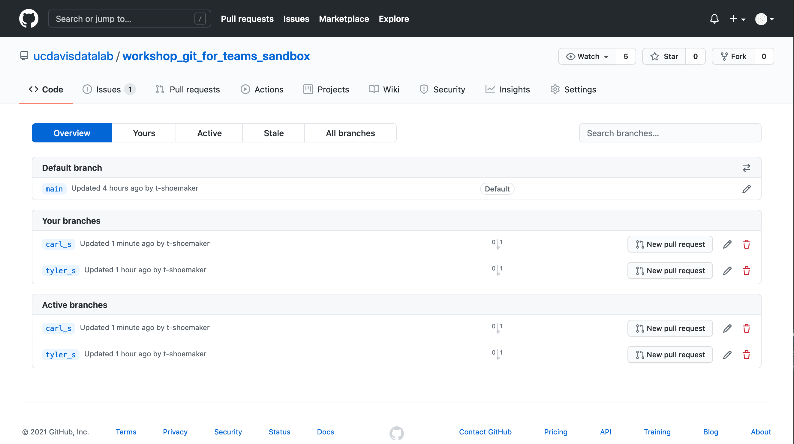
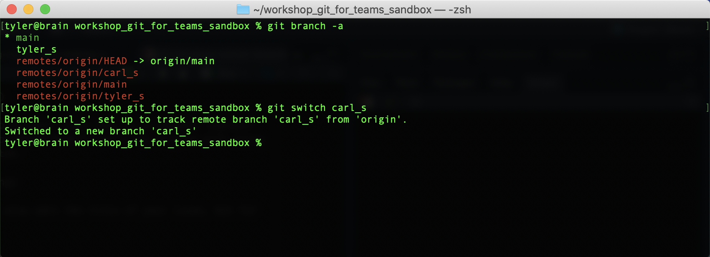
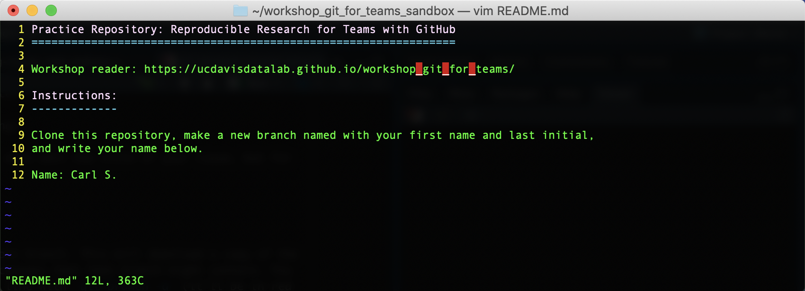
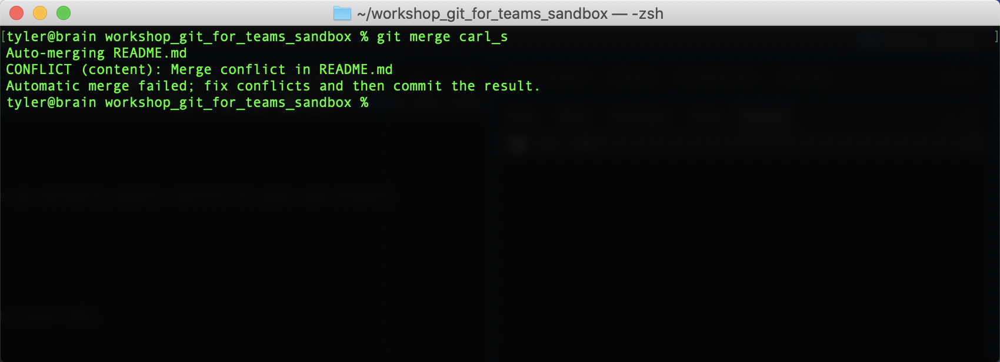
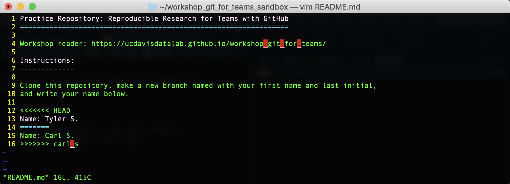
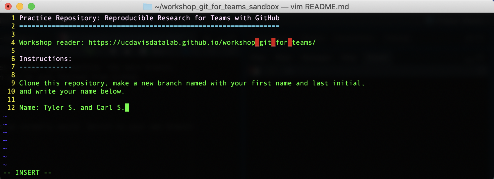
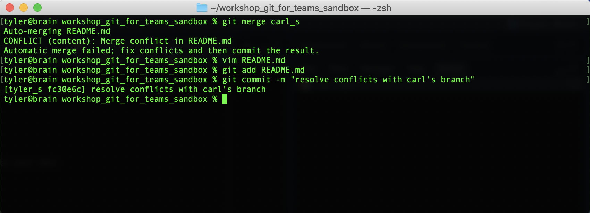
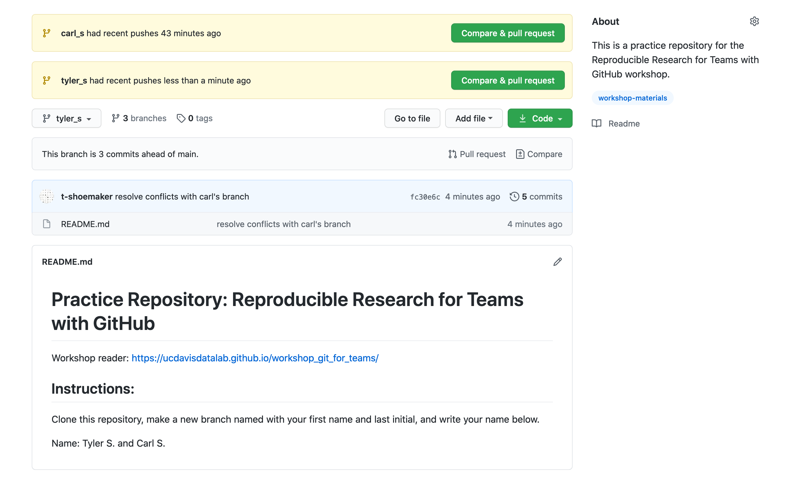
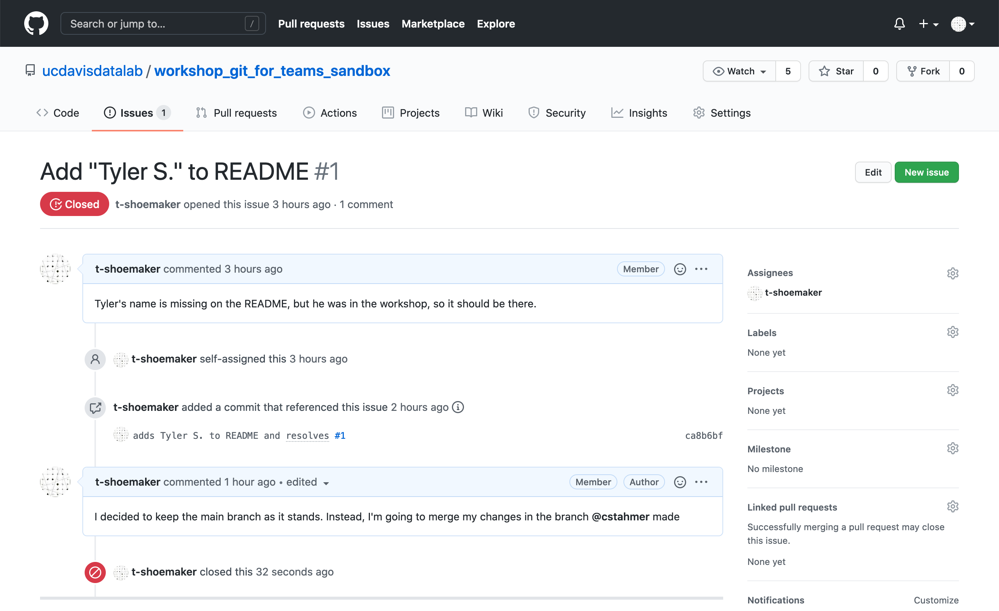

7 Merging Remote Branches
Clicking on the hyperlink will take you directly to the issue you created. From here, we’re at a crossroads. We could go ahead and implement our changes on the main branch (more about that in a minute) and close out the issue. But there are a lot of participants in the workshop, and all those branches will be a headache to merge seamlessly into main. What we’ll do, then, is implement our changes on only one other remote branch, leaving the main one alone for now.
7.1 A Quick Change of Plans
First, on the “branches” page, find another branch with which to merge your own. You should select a branch made by another workshop participant.

When you’ve decided on a branch, go to your issue and, in a comment, explain your change of plans. Tag the person whose branch you’ll be merging with using “@”. Click the green “Comment” button.

In a real-world project, you might also edit the title of your issue, but for now, you can leave it as is.
7.2 Fetching a Remote Branch
Now it’s time to fetch the remote branch. This will download a copy of the
branch but it won’t implement any changes that that branch might contain. You
can find the branch on the command line with git branch -a (it’ll be in red
text).
To fetch the branch and begin tracking any future changes that might occur on that branch, simply type:
git switch <remote-branch>(Note: in the past, Git has used other commands like fetch and track to
perform these operations, but the new switch is much easier.)
You should see something like this:

And, if you open the README.md file, you’ll find that your name has disappeared and the other person’s name is there instead.

You should now have three branches on your local machine: the main branch, the one you created, and the branch you’ve just fetched from GitHub.
7.3 Merging Branches
From here, we can merge branches as we normally would. Switch to your own branch:
git checkout <your-branch>Now, try merge the other branch into your own:
git merge <other-branch>You should see an error. This is because both you and the other person have put your names on the same line.

If you open README.md with Vim, you’ll see where the problem is:

Fix this conflict by deleting the conflict markers (all the <’s, =’s, and
>’s) and the other person’s changes. Add their name after your own.

Save and quit Vim. Then, add README.md to your staging area and commit your changes. Your command line should look something like this when you’re done:

If you type git status, you’ll see that your local repository is now ahead of
the remote one.
Go ahead and push your changes. If you go back to GitHub, you should now see
the modified README file rendered to the page.

7.4 Closing an Issue
Your task is done, so you can close your issue. Return to the “Issues” tab, find your issue, and close it. If you’d like, you can leave a comment when you close, but this is a pretty straightforward change, so in this case it’s not necessary.
The issue should look like this:
